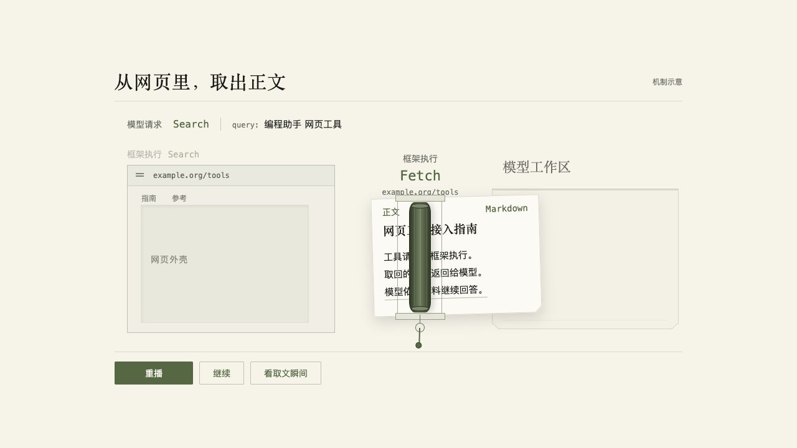
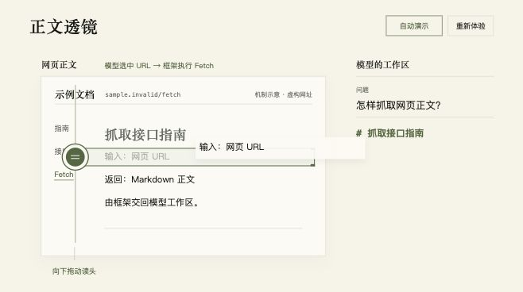
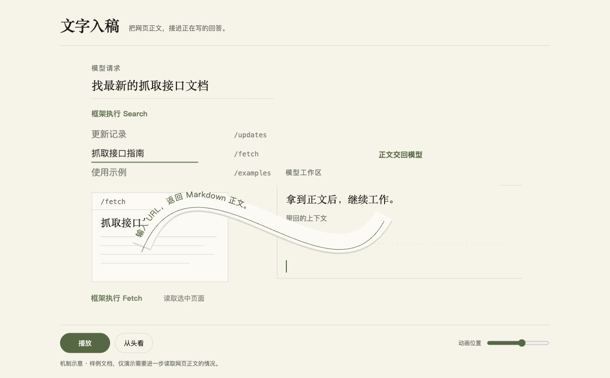

VIBEPOLARIS · 动画方向初稿
网页，怎样走进编程助手？
选择一个方向，直接玩。每版都把“线索 → 正文 → 模型工作区”变成对象的运动。
A
活字取文机
网页留下外壳，正文抽出来，压入工作区。
B
正文透镜
亲手推动读头，正文逐行穿过边界。
C
文字入稿
正文揭成一条文字带，拉直排进回答。
单独打开 A
可运行方向样片 · 尚未替换文章
单独打开 B
可运行方向样片 · 尚未替换文章
单独打开 C
可运行方向样片 · 尚未替换文章

A · 活字取文机

B · 正文透镜

C · 文字入稿